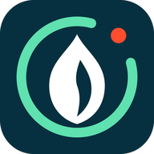
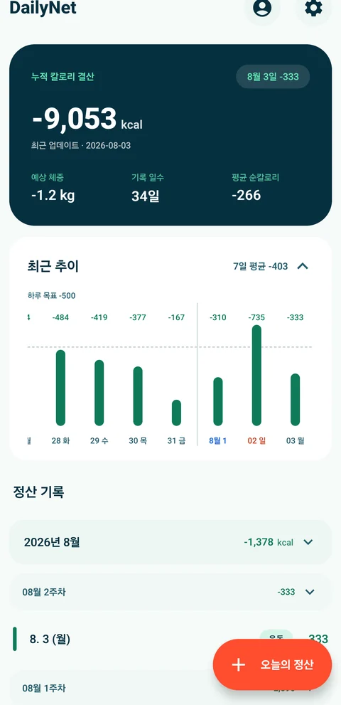
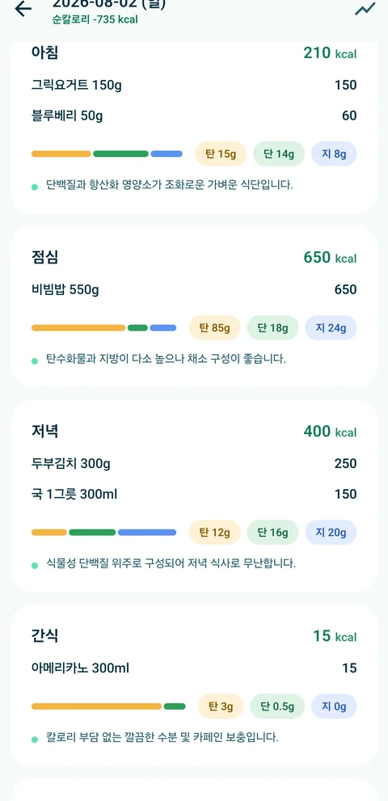
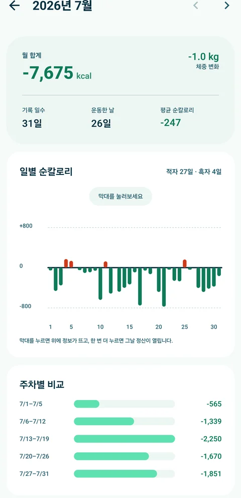

DailyNet데일리넷(DailyNet)은 먹은 음식과 운동을 기록하는 다이어트 식단 관리 앱입니다. AI가 추정한 섭취 칼로리에서 기초대사량과 운동·걸음 수 소모량을 빼 하루의 순칼로리를 계산합니다. 계산 결과는 참고용이며 실제 체중 변화를 확정하지 않습니다.
Google Play 에서 받기 Android · 무료


AI가 사진에서 메뉴를 읽어 입력창에 넣어줍니다. 결과는 초안이라 직접 고칠 수 있고, 사진은 텍스트로 바꾼 뒤 저장하지 않고 폐기합니다.
음식의 양과 조리법에 따라 실제 값과 차이가 날 수 있습니다. 분석된 칼로리와 탄단지는 직접 수정할 수 있고, 포장 식품은 영양성분표를 읽어 반영합니다.
1일부터 말일까지 일별 순칼로리, 주차별 비교, 체중 곡선, 가장 잘한 날까지. 안 적은 날은 빈칸으로 남아서 빠뜨린 날이 그대로 보입니다.
걸음 수는 Health Connect에서 자동으로 읽어옵니다. 홈 화면 위젯으로 앱을 열지 않아도 오늘의 순칼로리가 보이고, 정산을 안 한 날은 밤 9시에 한 번 알려줍니다.
결제 없이 그대로 쓸 수 있어요